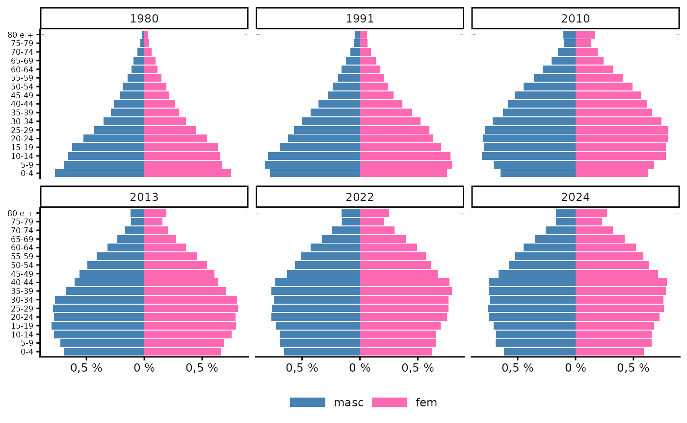

Estimativas populacionais por sexo e faixa etária para os municípios brasileiros, 1980 - 2024.
26 de
February de 2025
Source: vignettes/articles/populacao.Rmd
populacao.RmdO Departamento de Informática do SUS (DATASUS) distribuía as
estimativas e contagens populacionais por sexo e faixa etária quinquenal
para os municípios brasileiros em arquivos separados por ano, desde 1980
até 2012. Após ficarmos um período sem estimativas para os anos
seguintes, foi publicado no aplicativo on-line de tabulação de dados do
DATASUS, o TABNET,
o Estudo
de estimativas populacionais para os municípios brasileiros,
desagregadas por sexo e idade, 2000-2021, cujos resultados
ainda podem ser tabulados nessa
página, agora com o aviso de “população não mais em uso”,
porque o Censo 2022 mostrou que os cálculos foram superestimados.
Entretanto, os arquivos-fonte não eram disponibilizados, o que levou à
criação do pacote brpop e, posteriormente,
da função popbr2000_2021().
Com a atualização das estimativas populacionais após o Censo 2022, o DATASUS voltou a disponibilizar arquivos com as contagens e estimativas da população por sexo e idade para os municípios brasileiros. Assim, além das tabulações no TABNET, podemos novamente baixar os arquivos na página de transferência de arquivos ou no site FTP do DATASUS, em ftp://ftp.datasus.gov.br/dissemin/publicos/IBGE/POP/ e ftp://ftp.datasus.gov.br/dissemin/publicos/IBGE/POPSVS/. (Nota técnica)
Portanto, a função popbr2000_2021() não é mais
necessária, salvo para a reprodução de resultados anteriores e eventual
comparação com as estimativas atualizadas, razão pela qual é mantida no
pacote. As estimativas atualizadas são lidas pela função
ler_popbr(), que anteriormente lia os arquivos de 1980 a
2012 (página
de tabulação) e agora lê as novas estimativas e medidas, disponíveis
nos arquivos de 2013 a 2024 (página
de tabulação).
Os arquivos de população no DATASUS
Os arquivos são disponibilizados com registros para todos os municípios brasileiros, com estrutura um pouco diferente entre os períodos 1980-2012 e 2013-2024.
No período 1980 a 2012, a estrutura é a seguinte (veja que é a mesma estrutura para os dois anos selecionados):
br1980 <- ler_popbr(1980)
all.equal( str(br1980), str(ler_popbr(2012)) )
'data.frame': 524171 obs. of 7 variables:
$ munic_res: chr "110002" "110002" "110002" "110002" ...
..- attr(*, "label")= chr "Codigo IBGE do municipio"
$ ano : Factor w/ 1 level "1980": 1 1 1 1 1 1 1 1 1 1 ...
$ sexo : Factor w/ 2 levels "masc","fem": 1 1 1 1 1 1 1 1 1 1 ...
$ situacao : Factor w/ 2 levels "urbana","rural": 1 1 1 1 1 1 1 1 1 1 ...
$ fxetaria : Factor w/ 34 levels "0000","0101",..: 1 2 3 4 5 6 7 8 9 10 ...
..- attr(*, "label")= chr "Faixa etaria detalhada"
$ populacao: int 402 318 303 387 347 318 280 306 284 301 ...
$ fxetar5 : Factor w/ 17 levels "0-4","5-9","10-14",..: 1 1 1 1 1 2 2 2 2 2 ...
..- attr(*, "label")= chr "Faixa etaria quinquenal"
- attr(*, "data_types")= chr [1:6] "C" "C" "C" "C" ...
'data.frame': 367290 obs. of 7 variables:
$ munic_res: chr "110001" "110001" "110001" "110001" ...
..- attr(*, "label")= chr "Codigo IBGE do municipio"
$ ano : Factor w/ 1 level "2012": 1 1 1 1 1 1 1 1 1 1 ...
$ sexo : Factor w/ 2 levels "masc","fem": 1 1 1 1 1 1 1 1 1 1 ...
$ situacao : Factor w/ 2 levels "urbana","rural": 1 1 1 1 1 1 1 1 1 1 ...
$ fxetaria : Factor w/ 33 levels "0000","0101",..: 1 2 3 4 5 6 7 8 9 10 ...
..- attr(*, "label")= chr "Faixa etaria detalhada"
$ populacao: int 187 186 187 190 193 198 204 211 219 226 ...
$ fxetar5 : Factor w/ 17 levels "0-4","5-9","10-14",..: 1 1 1 1 1 2 2 2 2 2 ...
..- attr(*, "label")= chr "Faixa etaria quinquenal"
- attr(*, "data_types")= chr [1:6] "C" "C" "C" "C" ...
[1] TRUEPrimeiros e últimos registros:
br1980 |> head()
munic_res ano sexo situacao fxetaria populacao fxetar5
1 110002 1980 masc urbana 0000 402 0-4
2 110002 1980 masc urbana 0101 318 0-4
3 110002 1980 masc urbana 0202 303 0-4
4 110002 1980 masc urbana 0303 387 0-4
5 110002 1980 masc urbana 0404 347 0-4
6 110002 1980 masc urbana 0505 318 5-9
br1980 |> tail()
munic_res ano sexo situacao fxetaria populacao fxetar5
524166 530010 1980 fem rural 6064 210 60-64
524167 530010 1980 fem rural 6569 187 65-69
524168 530010 1980 fem rural 7074 99 70-74
524169 530010 1980 fem rural 7579 51 75-79
524170 530010 1980 fem rural 8099 47 80 +
524171 530010 1980 fem rural I000 7 <NA>Já de 2013 a 2024, a estrutura é a seguinte (veja que também é a mesma estrutura para os dois anos selecionados):
br2024 <- ler_popbr(2024)
all.equal( str(ler_popbr(2013)), str(br2024) )
'data.frame': 902340 obs. of 6 variables:
$ munic_res: chr "110001" "110001" "110001" "110001" ...
..- attr(*, "label")= chr "Codigo IBGE do municipio"
$ ano : Factor w/ 1 level "2013": 1 1 1 1 1 1 1 1 1 1 ...
$ sexo : Factor w/ 2 levels "masc","fem": 1 1 1 1 1 1 1 1 1 1 ...
$ fxetaria : Factor w/ 81 levels "000","001","002",..: 1 2 3 4 5 6 7 8 9 10 ...
..- attr(*, "label")= chr "Faixa etaria detalhada"
$ populacao: int 201 204 202 198 197 195 201 210 220 226 ...
$ fxetar5 : Factor w/ 17 levels "0-4","5-9","10-14",..: 1 1 1 1 1 2 2 2 2 2 ...
..- attr(*, "label")= chr "Faixa etaria quinquenal"
- attr(*, "data_types")= chr [1:5] "C" "C" "C" "C" ...
'data.frame': 902340 obs. of 6 variables:
$ munic_res: chr "110001" "110001" "110001" "110001" ...
..- attr(*, "label")= chr "Codigo IBGE do municipio"
$ ano : Factor w/ 1 level "2024": 1 1 1 1 1 1 1 1 1 1 ...
$ sexo : Factor w/ 2 levels "masc","fem": 1 1 1 1 1 1 1 1 1 1 ...
$ fxetaria : Factor w/ 81 levels "000","001","002",..: 1 2 3 4 5 6 7 8 9 10 ...
..- attr(*, "label")= chr "Faixa etaria detalhada"
$ populacao: int 158 159 161 163 168 176 176 172 174 178 ...
$ fxetar5 : Factor w/ 17 levels "0-4","5-9","10-14",..: 1 1 1 1 1 2 2 2 2 2 ...
..- attr(*, "label")= chr "Faixa etaria quinquenal"
- attr(*, "data_types")= chr [1:5] "C" "C" "C" "C" ...
[1] TRUEPrimeiros e últimos registros:
br2024 |> head()
munic_res ano sexo fxetaria populacao fxetar5
1 110001 2024 masc 000 158 0-4
2 110001 2024 masc 001 159 0-4
3 110001 2024 masc 002 161 0-4
4 110001 2024 masc 003 163 0-4
5 110001 2024 masc 004 168 0-4
6 110001 2024 masc 005 176 5-9
br2024 |> tail()
munic_res ano sexo fxetaria populacao fxetar5
902335 530010 2024 fem 075 6962 75-79
902336 530010 2024 fem 076 6392 75-79
902337 530010 2024 fem 077 5889 75-79
902338 530010 2024 fem 078 5392 75-79
902339 530010 2024 fem 079 4904 75-79
902340 530010 2024 fem 080 33813 80 +No primeiro período os bancos têm sete variáveis, já de 2013 em
diante apenas seis, porque estes últimos não contêm a variável
situacao (urbana ou rural). Além disso, a variável
fxetaria, que tem o mesmo nome e rótulo nos dois períodos
(Faixa etaria detalhada, e Faixa etaria detalhada) tampouco tem a mesma
estrutura nos dois períodos. De 1980 a 2012 a “Faixa etária detalhada”
se refere a essa classificação em algumas tabulações do DATASUS, em que
a idade é definida anualmente até os 19 anos de idade e em faixas
quinquenais até 80 anos ou mais (e mais uma categoria para ignorados,
com um total de 34 categorias), enquanto nas estimativas atualizadas a
“Faixa etária detalhada” é a idade em anos até 80 ou mais (81
categorias).
Vejamos novamente a variável fxetaria:
- em 1980
str(br1980$fxetaria)
Factor w/ 34 levels "0000","0101",..: 1 2 3 4 5 6 7 8 9 10 ...
- attr(*, "label")= chr "Faixa etaria detalhada"
br1980$fxetaria |> unique()
[1] 0000 0101 0202 0303 0404 0505 0606 0707 0808 0909 1010 1111 1212 1313 1414
[16] 1515 1616 1717 1818 1919 2024 2529 3034 3539 4044 4549 5054 5559 6064 6569
[31] 7074 7579 8099 I000
34 Levels: 0000 0101 0202 0303 0404 0505 0606 0707 0808 0909 1010 1111 ... I000- em 2024
str(br2024$fxetaria)
Factor w/ 81 levels "000","001","002",..: 1 2 3 4 5 6 7 8 9 10 ...
- attr(*, "label")= chr "Faixa etaria detalhada"
br2024$fxetaria |> unique()
[1] 000 001 002 003 004 005 006 007 008 009 010 011 012 013 014 015 016 017 018
[20] 019 020 021 022 023 024 025 026 027 028 029 030 031 032 033 034 035 036 037
[39] 038 039 040 041 042 043 044 045 046 047 048 049 050 051 052 053 054 055 056
[58] 057 058 059 060 061 062 063 064 065 066 067 068 069 070 071 072 073 074 075
[77] 076 077 078 079 080
81 Levels: 000 001 002 003 004 005 006 007 008 009 010 011 012 013 014 ... 080Isto é, para criar um banco com as estimativas para vários anos, há
que se levar em conta se o período desejado inclui arquivos com
diferente estrutura e em tal caso retirar a variável
situacao e as linhas de idade ignorada (registro
I000) das estimativas até 2012 e retirar a variável
fxetaria de todos os bancos. Em qualquer caso, ao se
trabalhar com faixas etárias quinquenais (fxetar5) a
população estimada para cada fxetaria deve ser agregada
(somada) nas categorias de fxetar5.
Montando um banco na sessão de trabalho
Assim podemos, por exemplo, criar um banco com as estimativas por sexo e faixa etária quinquenal para os municípios brasileiros nos anos 1980, 1991, 2010, 2013, 2022 e 2024 da seguinte forma:
br <- rbind(rbind(br1980, ler_popbr(1991), ler_popbr(2010)) %>%
filter(fxetaria != "I000") %>%
select(-situacao),
rbind(ler_popbr(2013), ler_popbr(2022), br2024)
) %>%
arrange(munic_res) %>%
group_by(munic_res, ano, sexo, fxetar5) %>%
reframe(populacao = sum(populacao))
str(br)
tibble [1,045,291 × 5] (S3: tbl_df/tbl/data.frame)
$ munic_res: chr [1:1045291] "110001" "110001" "110001" "110001" ...
..- attr(*, "label")= chr "Codigo IBGE do municipio"
$ ano : Factor w/ 6 levels "1980","1991",..: 2 2 2 2 2 2 2 2 2 2 ...
$ sexo : Factor w/ 2 levels "masc","fem": 1 1 1 1 1 1 1 1 1 1 ...
$ fxetar5 : Factor w/ 17 levels "0-4","5-9","10-14",..: 1 2 3 4 5 6 7 8 9 10 ...
$ populacao: int [1:1045291] 2328 2139 2202 1984 1677 1532 1216 932 742 641 ...
summary(br)
munic_res ano sexo fxetar5
Length:1045291 1980:135251 masc:522658 0-4 : 61514
Class :character 1991:152690 fem :522633 5-9 : 61514
Mode :character 2010:189210 10-14 : 61514
2013:189380 15-19 : 61514
2022:189380 20-24 : 61514
2024:189380 25-29 : 61514
(Other):676207
populacao
Min. : 1
1st Qu.: 128
Median : 287
Mean : 1032
3rd Qu.: 696
Max. :567340
Criando uma tabela
Uma tabela com a população por sexo e faixa etária para um ano determinado pode ser conseguida da seguinte forma:
tab81 <- ler_popbr(1981) %>%
group_by(sexo, fxetar5) %>%
mutate(sexo = case_match(sexo, "masc" ~ "Masculino", "fem" ~ "Feminino")) %>%
reframe(populacao = sum(populacao)) %>%
tidyr::pivot_wider(names_from = sexo, values_from = populacao) %>%
relocate(Masculino, .before = Feminino) %>%
mutate(Total = Masculino + Feminino) %>%
adissoma()A tabela pode ser exportada para um arquivo .csv (veja
?write.csv) ou impressa:
| fxetar5 | Masculino | Feminino | Total |
|---|---|---|---|
| 0-4 | 8.269.866 | 8.071.642 | 16.341.508 |
| 5-9 | 7.576.670 | 7.388.199 | 14.964.869 |
| 10-14 | 7.271.064 | 7.206.021 | 14.477.085 |
| 15-19 | 6.766.039 | 6.912.903 | 13.678.942 |
| 20-24 | 5.768.802 | 5.919.669 | 11.688.471 |
| 25-29 | 4.782.179 | 4.945.365 | 9.727.544 |
| 30-34 | 3.942.249 | 4.038.940 | 7.981.189 |
| 35-39 | 3.254.178 | 3.366.290 | 6.620.468 |
| 40-44 | 2.940.172 | 2.964.125 | 5.904.297 |
| 45-49 | 2.363.808 | 2.421.955 | 4.785.763 |
| 50-54 | 2.080.665 | 2.123.882 | 4.204.547 |
| 55-59 | 1.602.999 | 1.638.967 | 3.241.966 |
| 60-64 | 1.237.981 | 1.317.013 | 2.554.994 |
| 65-69 | 1.011.719 | 1.082.389 | 2.094.108 |
| 70-74 | 648.369 | 720.509 | 1.368.878 |
| 75-79 | 397.214 | 478.080 | 875.294 |
| 80 + | 262.323 | 381.913 | 644.236 |
| Total | 60.176.297 | 60.977.862 | 121.154.159 |
As funções plot_pir e ggplot_pir, do pacote
Rcoisas, ajudam na visualização dos câmbios na estrutura demográfica
brasileira ao longo desses anos:
par(mfrow = c(1,2))
plot_pir(br1980, local = "Brasil", fontsize = .8)
plot_pir(br2024, local = "Brasil", fontsize = .8)
ggplot_pir(br, "fxetar5", "sexo", "populacao", nsize = 0) +
facet_wrap(vars(ano)) +
theme_classic() +
theme(axis.text.y = element_text(size = 6),
legend.position = "bottom",
legend.key.size = unit(3, 'mm'),
legend.key.width = unit(1, 'cm')) 
Validando os resultados
Se quisermos uma tabulação da população brasileira por sexo e faixa etária quinquenal no período de 1980 a 2012, devemos pedir no TABNET uma tabulação por “faixa etária detalhada”.1 Para 1981, temos a seguinte tabela:
knitr::include_graphics("figuras/tabnetpop81.png")
População por sexo e faixa etária. Brasil, 1981. Tabulação no TABNET, 25/02/2025.
Vamos ler essa tabela, salva como arquivo .CSV através do botão “Copia para .csv”, no TABNET.
tab81tabnet <- read.csv2("../../data-raw/ibge_cnv_popbr1981.csv", skip = 3, nrows = 18, encoding = "latin1")
tab81tabnet |> kable(format.args = list(big.mark = "."))| Faixa.Etária.detalhada | Masculino | Feminino | Total |
|---|---|---|---|
| 0 a 4 anos não detalhado | 8.269.866 | 8.071.642 | 16.341.508 |
| 5 a 9 anos não detalhado | 7.576.670 | 7.388.199 | 14.964.869 |
| 10 a 14 anos não detalhado | 7.271.064 | 7.206.021 | 14.477.085 |
| 15 a 19 anos não detalhado | 6.766.039 | 6.912.903 | 13.678.942 |
| 20 a 24 anos | 5.768.802 | 5.919.669 | 11.688.471 |
| 25 a 29 anos | 4.782.179 | 4.945.365 | 9.727.544 |
| 30 a 34 anos | 3.942.249 | 4.038.940 | 7.981.189 |
| 35 a 39 anos | 3.254.178 | 3.366.290 | 6.620.468 |
| 40 a 44 anos | 2.940.172 | 2.964.125 | 5.904.297 |
| 45 a 49 anos | 2.363.808 | 2.421.955 | 4.785.763 |
| 50 a 54 anos | 2.080.665 | 2.123.882 | 4.204.547 |
| 55 a 59 anos | 1.602.999 | 1.638.967 | 3.241.966 |
| 60 a 64 anos | 1.237.981 | 1.317.013 | 2.554.994 |
| 65 a 69 anos | 1.011.719 | 1.082.389 | 2.094.108 |
| 70 a 74 anos | 648.369 | 720.509 | 1.368.878 |
| 75 a 79 anos | 397.214 | 478.080 | 875.294 |
| 80 anos e mais | 262.323 | 381.913 | 644.236 |
| Total | 60.176.297 | 60.977.862 | 121.154.159 |
Os valores são iguais aos que obtivemos acima na criação do objeto
tab81:
Para 2024, temos a seguinte tabela, e um resultado análogo:
knitr::include_graphics("figuras/tabnetpop24.png")
População por sexo e faixa etária. Brasil, 2024. Tabulação no TABNET, 25/02/2025.
tab24tabnet <- read.csv2("../../data-raw/ibge_cnv_popbr2024.csv", skip = 3, nrows = 18, encoding = "latin1")
tab24tabnet |> kable(format.args = list(big.mark = "."))| Faixa.Etária.2 | Masculino | Feminino | Total |
|---|---|---|---|
| De 0 a 4 anos | 6.661.380 | 6.356.612 | 13.017.992 |
| De 5 a 9 anos | 7.439.000 | 7.092.027 | 14.531.027 |
| De 10 a 14 anos | 7.429.136 | 7.076.552 | 14.505.688 |
| De 15 a 19 anos | 7.651.069 | 7.320.566 | 14.971.635 |
| De 20 a 24 anos | 8.044.783 | 7.821.129 | 15.865.912 |
| De 25 a 29 anos | 8.193.616 | 8.219.079 | 16.412.695 |
| De 30 a 34 anos | 7.992.515 | 8.181.015 | 16.173.530 |
| De 35 a 39 anos | 8.115.656 | 8.419.414 | 16.535.070 |
| De 40 a 44 anos | 8.073.611 | 8.525.842 | 16.599.453 |
| De 45 a 49 anos | 7.171.760 | 7.693.627 | 14.865.387 |
| De 50 a 54 anos | 6.215.140 | 6.798.626 | 13.013.766 |
| De 55 a 59 anos | 5.603.775 | 6.318.206 | 11.921.981 |
| De 60 a 64 anos | 4.833.395 | 5.622.638 | 10.456.033 |
| De 65 a 69 anos | 3.806.961 | 4.582.309 | 8.389.270 |
| De 70 a 74 anos | 2.768.674 | 3.500.843 | 6.269.517 |
| De 75 a 79 anos | 1.840.490 | 2.463.099 | 4.303.589 |
| De 80 anos ou mais | 1.821.325 | 2.929.880 | 4.751.205 |
| Total | 103.662.286 | 108.921.464 | 212.583.750 |
tab24 <- ler_popbr(2024) %>%
group_by(sexo, fxetar5) %>%
mutate(sexo = case_match(sexo, "masc" ~ "Masculino", "fem" ~ "Feminino")) %>%
reframe(populacao = sum(populacao)) %>%
tidyr::pivot_wider(names_from = sexo, values_from = populacao) %>%
relocate(Masculino, .before = Feminino) %>%
mutate(Total = Masculino + Feminino) %>%
adissoma()
knitr::kable(tab24, format.args = list(big.mark = "."))| fxetar5 | Masculino | Feminino | Total |
|---|---|---|---|
| 0-4 | 6.661.380 | 6.356.612 | 13.017.992 |
| 5-9 | 7.439.000 | 7.092.027 | 14.531.027 |
| 10-14 | 7.429.136 | 7.076.552 | 14.505.688 |
| 15-19 | 7.651.069 | 7.320.566 | 14.971.635 |
| 20-24 | 8.044.783 | 7.821.129 | 15.865.912 |
| 25-29 | 8.193.616 | 8.219.079 | 16.412.695 |
| 30-34 | 7.992.515 | 8.181.015 | 16.173.530 |
| 35-39 | 8.115.656 | 8.419.414 | 16.535.070 |
| 40-44 | 8.073.611 | 8.525.842 | 16.599.453 |
| 45-49 | 7.171.760 | 7.693.627 | 14.865.387 |
| 50-54 | 6.215.140 | 6.798.626 | 13.013.766 |
| 55-59 | 5.603.775 | 6.318.206 | 11.921.981 |
| 60-64 | 4.833.395 | 5.622.638 | 10.456.033 |
| 65-69 | 3.806.961 | 4.582.309 | 8.389.270 |
| 70-74 | 2.768.674 | 3.500.843 | 6.269.517 |
| 75-79 | 1.840.490 | 2.463.099 | 4.303.589 |
| 80 + | 1.821.325 | 2.929.880 | 4.751.205 |
| Total | 103.662.286 | 108.921.464 | 212.583.750 |
Os valores são os mesmos em ambos casos: